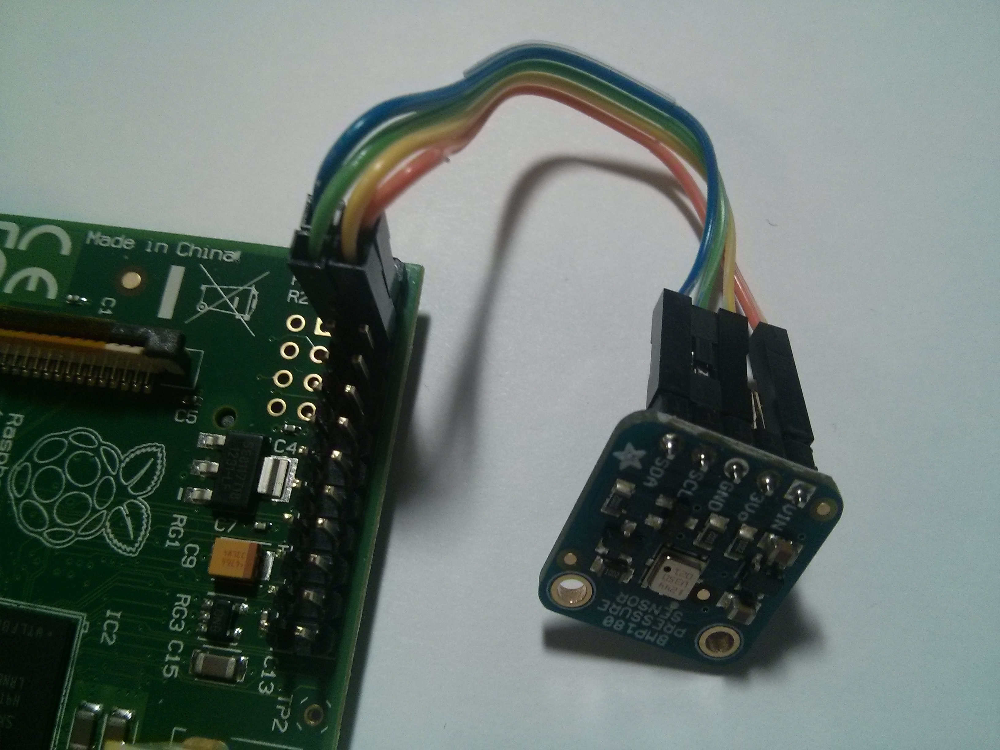

Rocket Control System
Goals
The goals for the rocket control system are to:
- Measure the altitude of the rocket.
- Release a parachute.
Plans
We're going to use a BMP-180 module to measure the altitude. It's a barometric pressure sensor and altimeter. The parachute will be released by turning a small servo motor. Each of these components will be wired up to the Raspberry Pi's GPIO pins.
GPIO Pins

The raspberry pi GPIO pins are laid out as shown above. Numbering can be confusing, because it seems like different documents number the pins in different ways. This diagram labels the entire GPIO header as P1, and numbers the pins on the left with odd numbers 1-25 and the pins on the right with even numbers 2-26.
Altimeter

The BMP-180 uses the I2C protocol. This protocol requires 4 connections: VIN (power), GND (ground), SCL (clock), and SDA (data). The BMP-180 pins should be connected to these GPIO pins:
| BMP-180 | GPIO | |
|---|---|---|
| VIN | 4 | |
| GND | 6 | |
| SCL | 5 | |
| SDA | 3 |
Here's what it looks like hooked up:

Servo

Servos have 3 wires: power, ground, and signal. My servo uses the following color codes:
| Wire | Color | |
|---|---|---|
| Power | Red | |
| Ground | Brown | |
| Signal | Orange |
The servo signal needs pulse width modulation in order to control the servo's position correctly. The raspberry pi supports hardware based PWM only on pin number 12, labeled "GPIO 18 (PCM_CLK)" on the diagram, so we'll use that one for the signal. It is possible to use other pins using software PWM support.
The servo wires should be connected to these GPIO pins:
| Servo | GPIO | |
|---|---|---|
| Power | 2 | |
| Ground | 14 | |
| Signal | 12 |
Here's what it looks like hooked up: